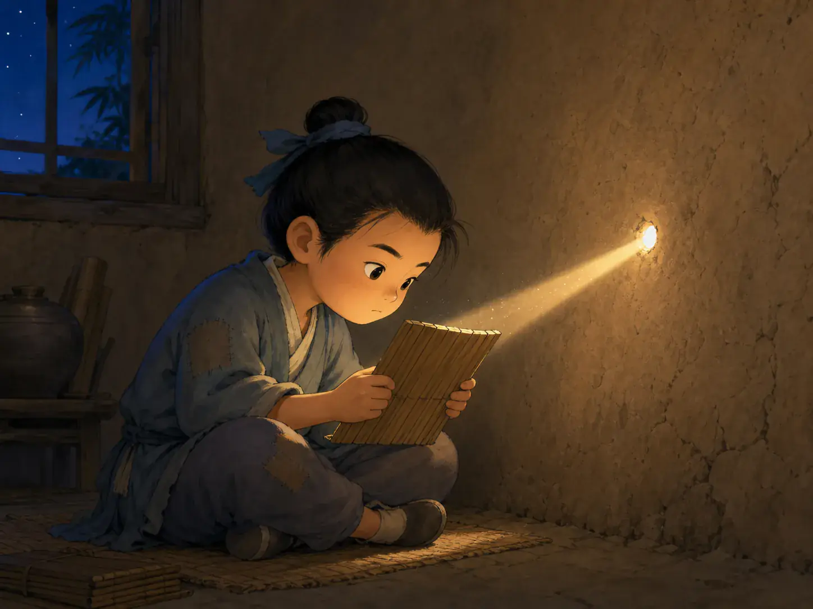

凿壁偷光
Borrow a Little Light and Keep Learning

The hole in the wall is tiny and the light is weak, but the child still wants to keep reading.
还有一个故事，说一个家里很穷的孩子，晚上点不起灯，可他又很想读书。怎么办？他就在墙上凿了一个小洞，借隔壁家的灯光来看书。后来，人们把这个故事叫作“凿壁偷光”。它让人记住的，不只是那一点点光，而是这个孩子明明条件不好，还是想办法继续学。所以这个故事不只是在说“墙上有个洞”这么简单，而是在说：就算手里不多，也别轻易停下。
Another story tells of a poor child who could not afford lamp oil at night but still wanted badly to read. So he cut a tiny hole in the wall and borrowed light from the neighbor’s house. People later called this story “borrowing light through the wall.” What people remember is not only the thin beam of light. They remember that the child had very little, yet still found a way to keep learning. So the story is not only about a hole in a wall. It is also about not giving up just because you do not have much to work with.